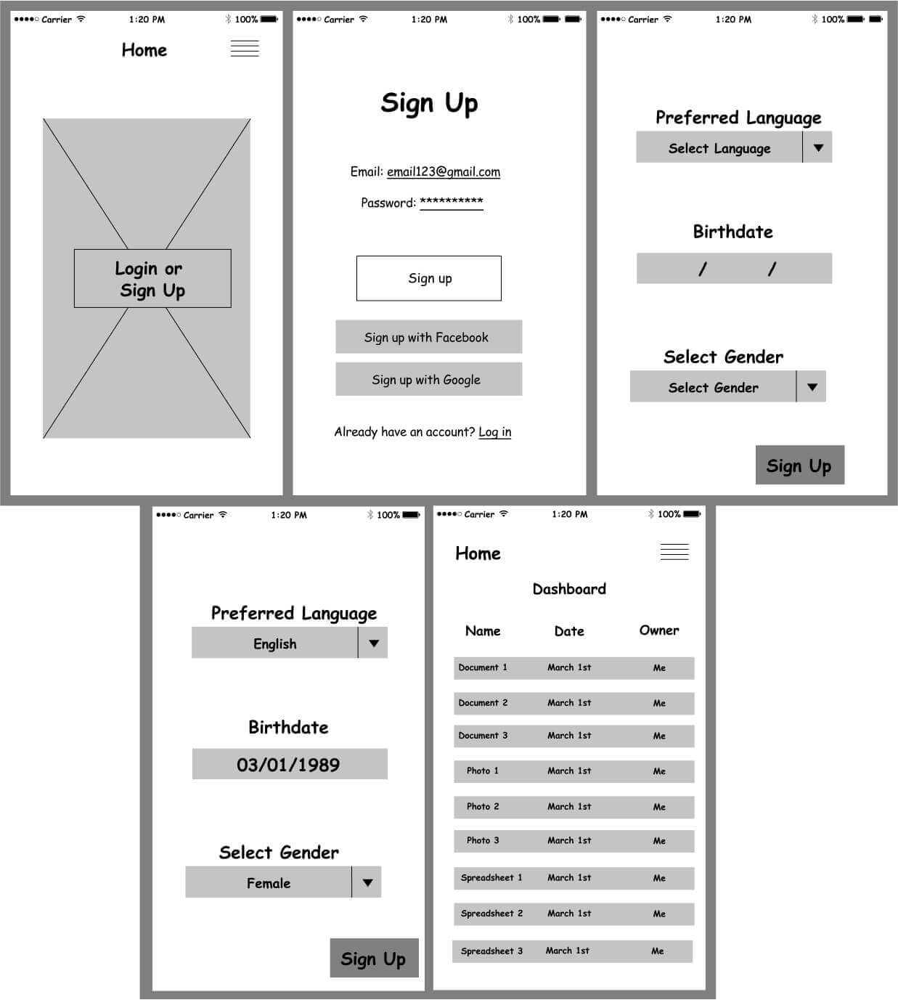
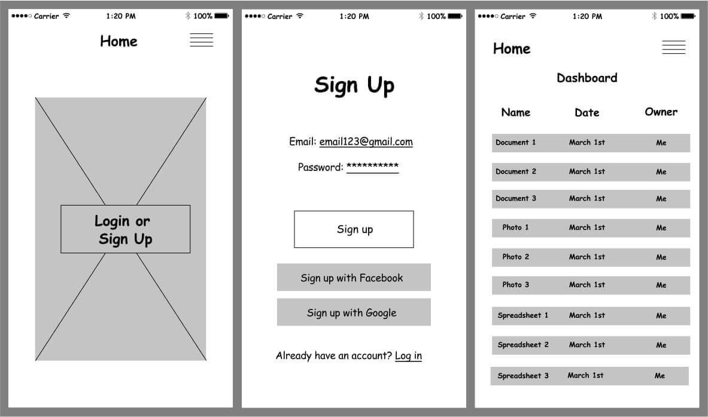

Many cloud storage apps available today do not address all of their
users needs which forces users to utilize multiple apps. We wanted to
solve this and create an app that will allow users to use just our app
instead of using several different ones for different purposes. I
managed this project from start to finish, beginning with just a concept
and ending with a finished prototype.
Along the way, I performed research, created
wireframes and mockups, with Figma & Sketch,
decided on all branding and design, and completed the
project by creating a prototype using Invision.
User Research, Prototyping, Visual Design, Branding
Deliverables
User surveys, personas, competitive analysis, user stories, user
flows, wireframes, prototype, user testing, visual design, style
guide
Problem
Our task was to create a cloud
storage app that would be a major
competitor to apps like Google
Drive, Pinterest, etc. The primary
features were to save web content,
organize & create content, upload
files, and allow users to
collaborate. Our goal was to
combine these features and more
to create a compelling and user
friendly cloud storage app.
Solution
Our solution was to create a simple,
user friendly cloud storage app
called Trunk that allows users to
use our platform for all of their
needs. Our research indicated two
major findings. Our first finding
was that we needed a
collaboration feature. Our second
finding was that the main concern
with cloud storage is security.
Using this information, we designed
an attractive and useful app that
will become a main competitor for
the cloud storage apps available.
Process
Trunk was developed out of desire to create
a cloud storage app that would combine the popular features of other apps into
a simple but highly useful one that would serve all of our users cloud storage
needs. We started with just an idea and built Trunk with
the following steps.
Research
Before starting our design, we wanted to ensure that we were designing what
the users want. In order to find which features are most useful, we created a
cloud storage survey that asked whether respondants used cloud storage, why
or why not, which features they preferred, and more.
Our findings were that the highest priority features were accessing files from
anywhere, sharing content, and backing up data. For those who do not use
cloud storage, the were primarily concerned about privacy and security.
82%
use a cloud storage app
92.9%
want to easily share content with others
85.7%
want to access their files from anywhere
92.9%
primarily use document & photo storage
83%
would find a collaboration feature highly useful
Competitive Analysis
After our survey data was complete, we went on to perform
a competitive analysis
of other current cloud storage apps for
their strengths and flaws. We conducted a analysis of
two different cloud storage apps-- Google Drive and Dropbox.
We found their strengths to include having nothing to
download, easy sharing, auto saving, and a free option. We
found weaknesses to be primarily a lack of ability to save web
content. We took these results into account when deciding on
our app structure.
User Personas
We wanted to get into the minds of our users to make sure we were designing
Trunk with them in mind, so we created user personas. Our two user personas
were Laura, the busy woman who likes to keep her content organized,
and Aaron, the student who needs to have the ability to back up, share, and
collaborate on his files.
User Stories & Flows
We then created user stories
to determine which actions our users want to use
every time they log in, only occasionally, and rarely to be sure to properly
prioritize the former. The most important features are to be able to create an
account, login, upload files, access files from anywhere, collaborate, answer
security questions to verify identity, and auto backups.
These user stories were then converted into user flows
to map each process from point A to point B.
Wireframes & Usability Tests
Now, after we’d done our research, we were ready to begin designing. We used
our user flows to create wireframes for each of our high priority user stories and
created a clickable prototype in which our users could go through and act out
all of the high priority actions.
We wanted to test this prototype to make sure that our proceses were user
friendly, so we conducted usability tests asking our participants to create an
account, upload a document, and organize a piece of content.
What we learned from this was that our sign up process was a bit too long. We
took this finding and incorporated it into our design as well as the other
feedback we received. You can see our original sign up process as well as our
updated sign up process below.
Original Sign Up Process:

Updated Sign Up Process:

Branding
We moved forward to create mockups of our designs. First, we needed to
decide on solid branding for our app which first needed to include a name
and a logo. The name Trunk works in two ways: Elephants of course have a reputation
for having a long memory and a trunk is where people store things. Storage and
memory together are exactly what we’re creating. We then focused on our logo,
which had many different iterations but eventually became the silhouette of an
elephant with the trunk creating the letter U in Trunk. My original sketches and
finished logo are below.
With our logo in place, we moved on to create a color scheme, typography,
buttons, and much more. We created a comprehensive style guide
to organize all of these thoughts. Using this branding, we moved forward to design our
mockups.
Mockups
Keeping in mind our style guide and branding decisions, we went forward to
design 121 individual mockup screens that would become our prototype. These
were more colorful and attractive than our wireframes. After many drafts and
changes, we moved forward to creating our second clickable prototype.
When we were finished, we conducted another usability test to ensure that our
design was user friendly and we found this time that half of the users wanted to
take the original route to adding content to a folder, so we changed the process
to include both possible routes to make it easier for our users. After many drafts
and multiple tests, our final prototype was ready.
Throughout this project, I learned that the first steps in creating the skeleton
of a project are the most critical ones, as without a solid foundation, the project
crumbles. Everything needs to be thought out in detail and the designs need to
be very consistent throughout to make a user friendly experience.
Originally, we were doubtful that there was need for such a product or that
we’d be able to create a worthy competitor for the current cloud apps out there.
However, after all of our hard work, we were pleasantly surprised to find that
we did find the right combination of features and feel confident in Trunk’s
potential.